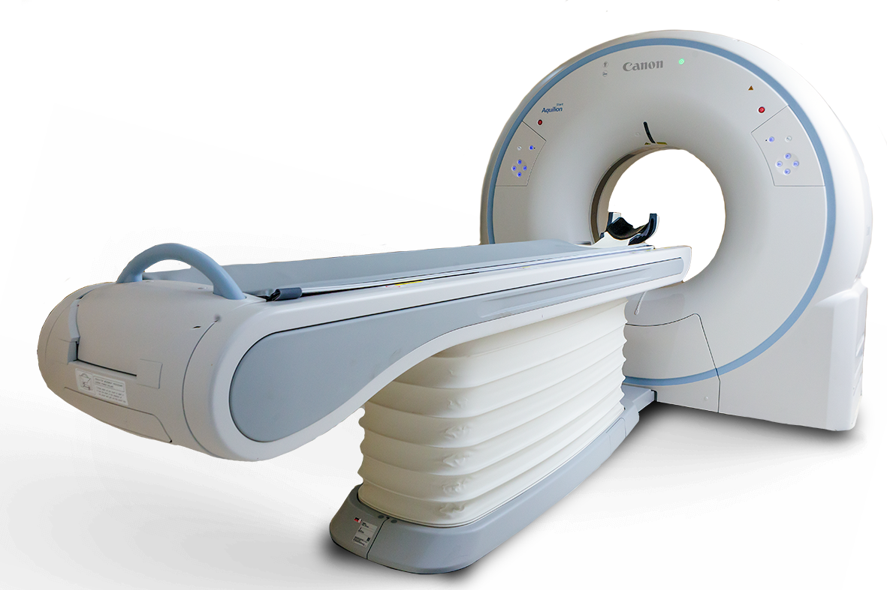

Tomografia Computadorizada Siemens
Função da Tomografia
A Tomografia Computadorizada (TC) gera imagens em cortes transversais do corpo humano, com melhor distinção entre tecidos em comparação à radiologia convencional. É essencial em áreas como neurologia, oncologia, cardiologia, traumas e planejamento cirúrgico.
Ficha Técnica - Tomografia Computadorizada (Modelos Siemens)
| Modelo: | SOMATOM Force |
| Tipo: | Dual Source (2 tubos de raio-X e 2 detectores) |
| Tempo de rotação: | 250 ms |
| Resolução temporal: | 66 ms (ideal para exames cardíacos) |
| Tecnologia adicional: | Dual Energy, 4D Imaging |
| Modelo: | SOMATOM X.ceed |
| Diferenciais: | Alta resolução espacial e temporal, bore de 82 cm |
| Recursos de apoio: | MyExam Companion, myNeedle Companion |
| Modelo: | SOMATOM go.Top |
| Tipo de scanner: | 16 a 128 cortes |
| Controle: | Tablet com conexão Bluetooth |
| Resolução: | Isotrópica de 0,33 mm |
| Redução de dose: | Tecnologia com filtro de estanho |
| Modelo: | NAEOTOM Alpha |
| Tecnologia: | Contagem de fótons (Photon-counting CT) |
| Detectores: | CdTe (telureto de cádmio) |
| Número de cortes: | 144 cortes |
| Tempo de rotação: | 0,25 s |
| Diferenciais: | Melhor relação sinal-ruído (SNR) e contraste de imagem |
Física Envolvida
A Tomografia Computadorizada (TC) envolve uma série de processos físicos integrados que permitem obter imagens detalhadas do interior do corpo humano:
- 1. Geração de Raios X: Utiliza-se um tubo onde elétrons acelerados colidem com um alvo metálico, produzindo radiação por frenagem e emissão característica. O feixe é policromático e sua energia, entre 80 a 140 kVp, afeta contraste e dose absorvida.
- 2. Geometria e Rotação: O tubo e os detectores giram 360° ao redor do paciente. Em sistemas helicoidais, a mesa se move continuamente, formando um trajeto espiral. O pitch controla a relação entre avanço da mesa e espessura do feixe, influenciando resolução e dose.
- 3. Interação com Tecidos: Os raios X sofrem atenuação ao atravessar o corpo, principalmente por efeito fotoelétrico (bom contraste em estruturas densas) e espalhamento Compton (predominante em tecidos moles). Cada voxel apresenta um coeficiente de atenuação linear distinto.
- 4. Detecção: Detectores semicondutores, como CdTe, convertem fótons em sinais elétricos. Detectores de contagem de fótons classificam os fótons por energia, melhorando a diferenciação de tecidos e a eficiência de dose.
- 5. Reconstrução da Imagem: Algoritmos como FBP (Filtered Back Projection) e reconstruções iterativas como SAFIRE e ADMIRE reconstroem imagens com diferentes níveis de qualidade, ruído e fidelidade. Técnicas dual-energy usam dois níveis de kVp para gerar imagens que distinguem materiais como cálcio e ácido úrico.
- 6. Pós-processamento: Softwares avançados aplicam fusão de imagens, reconstrução tridimensional (VR, MIP) e análise funcional (ex: curvas de perfusão), permitindo diagnósticos mais precisos e personalizados.
A TC é um exemplo de aplicação integrada da física quântica (interação fóton-matéria), eletrônica (detectores), física computacional (reconstrução numérica) e matemática (transformadas de Fourier e Radon). As inovações recentes, como detecção espectral por contagem de fótons, abrem caminhos para diagnósticos mais específicos e seguros, alinhados à medicina personalizada.
Falhas Comuns e Soluções
| Problema | Causa | Solução |
|---|---|---|
| Artefatos de movimento | Paciente não está imóvel | Utilizar Dual Source ou 4D; reforçar instruções ao paciente |
| Ruído excessivo | Dose muito baixa ou protocolo inadequado | Ativar ADMIRE, ajustar mAs/kVp, manutenção de detectores |
| Desalinhamento de gantry/colimador | Problemas mecânicos | Realizar calibração periódica via RSTI |
| Falha no tubo de RX | Superaquecimento ou desgaste | Substituir e monitorar temperatura |
| Erros no software syngo | Bugs ou versões desatualizadas | Manter versão certificada (VB10, VA40, etc.) |
| Artefatos de dose espalhada | Proteção radiológica deficiente | Blindagem adequada e monitoramento com dosímetro |
Importância Clínica
- Diagnóstico preciso com cortes transversais e reconstruções 3D
- Utilidade em traumas, câncer, doenças vasculares e neurológicas
- Permite avaliações funcionais (volume, perfusão, fluxo)
- Redução de dose com softwares CARE, FAST e filtros especiais
- Facilita procedimentos guiados (biópsias, neurocirurgia)